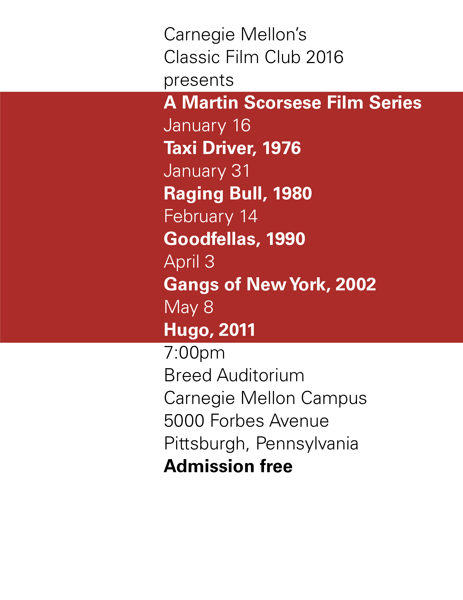
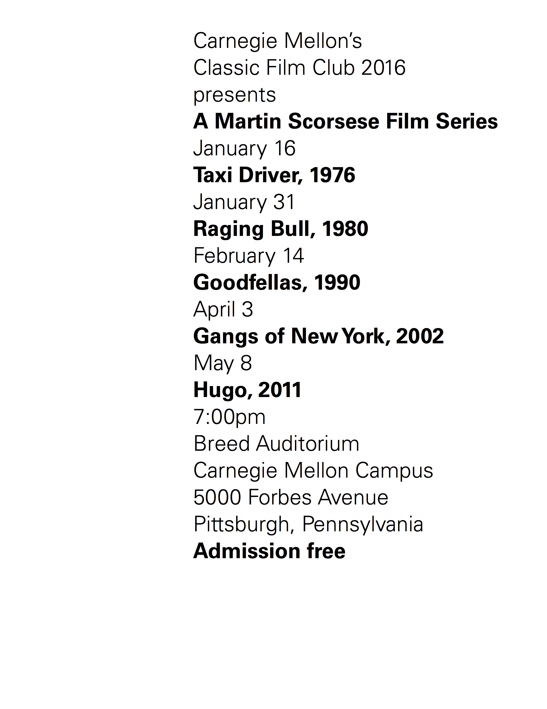
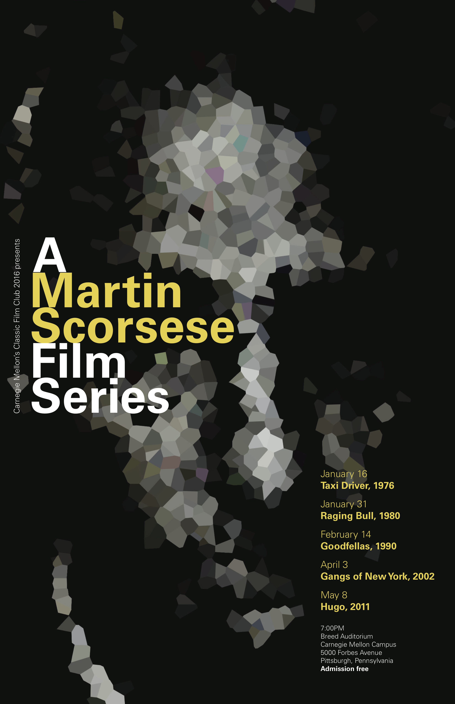

This was an exercise in exploring how text size, weight, color, and image interact to create a sense of hierarchy. We were given a basic template, consisting of event information and dates, to play around with. By experimenting and deciding which parts of the text were most important, I created posters that utilize visual hierarchy to guide the viewer.


